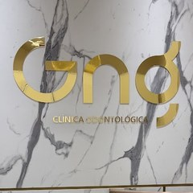

Início · Tratamentos · Reabilitação oral
Reabilitação oral: reabilitar sorrisos, etapa por etapa.
“Reabilitar sorrisos” é como a GNG descreve o próprio propósito. Uma das sócias, Gislane Fontes do Nascimento, tem Implantodontia e Prótese Dentária registradas no CRO-BA. Esta página reúne informação geral para ler antes da avaliação.

Entenda
O que é reabilitação oral
Reabilitação oral é o nome dado ao conjunto de tratamentos que devolvem à boca a mastigação, a fala e a aparência quando faltam dentes, quando eles estão muito desgastados ou quando uma prótese antiga já não serve bem.
Ela costuma combinar várias áreas da odontologia — gengiva, restaurações, canal, prótese e, quando indicado, implantes — numa ordem planejada.
“O sorriso faz parte da nossa identidade. Com o tempo, muitas coisas mudam, mas a alegria de sorrir nunca deveria ser perdida.”
Legenda no Instagram da clínica · @clinicagng_Cada boca pede um plano diferente. As opções desta página são informação geral; quais fazem sentido para você, a dentista explica na avaliação.
Opções
Prótese e implantes
Coroa
Uma “capa” que reconstrói um dente muito destruído ou repõe um dente sobre implante.
Prótese fixa
Dentes repostos com peças presas a dentes vizinhos ou a implantes; não sai em casa.
Prótese removível
Parcial ou total, encaixada na boca e retirada para a limpeza.
Implante
Um pino colocado no osso que faz o papel da raiz e recebe a prótese depois de integrado.
Qual opção é possível depende de quantos dentes faltam, do osso, da gengiva, da mordida e da saúde geral. Às vezes, o primeiro passo é tratar a gengiva ou um dente antes de pensar na prótese.
Passo a passo
O caminho em etapas
- EscutaO que trouxe você, a saúde geral, os remédios e os tratamentos que já fez.
- ExameDentes, gengiva, mordida e próteses antigas; exames de imagem quando indicados.
- PlanoAs opções explicadas com calma e a ordem do tratamento, combinada com você.
- BasePrimeiro a saúde: gengiva, cáries, canais e extrações, quando indicados.
- ReabilitaçãoPrótese, coroa, implante ou outra solução indicada para o seu caso.
- ManutençãoHigiene em casa e consultas periódicas para acompanhar o que foi feito.
Os prazos de cada etapa variam de pessoa para pessoa e são explicados na avaliação.
Na GNG
Quem cuida
- Gislane Fontes do Nascimento — sócia; especialidades registradas no CRO-BA: Implantodontia e Prótese Dentária (painel do CRO-BA).
- Dra. Gabriela Fontes — CRO-BA 15130; o perfil dela na Doctoralia lista prótese dentária e reabilitação oral.
- Dra. Nathalia Fontes — sócia-administradora, CRO-BA 13644; atuação em alinhadores e ortodontia, que às vezes fazem parte do preparo de uma reabilitação.
“Na família GNG, nosso propósito é reabilitar sorrisos com respeito, cuidado e naturalidade […]”
Legenda no Instagram da clínica · @clinicagng_Acompanhamento
Depois do tratamento
Prótese e implante também precisam de cuidado: limpeza diária, atenção à gengiva ao redor e consultas periódicas para conferir a mordida, os encaixes e a saúde dos tecidos.
- Gengiva que sangra ou incha ao redor da prótese ou do implante.
- Prótese solta, com folga ou que mudou a mordida.
- Dor ao mastigar ou ferida que não cicatriza.
Qualquer um desses sinais é motivo para falar com a clínica antes da data da revisão.
Dúvidas frequentes
Perguntas comuns
Todo dente perdido precisa de implante?
Não necessariamente. Prótese fixa sobre dentes, prótese removível e implante são caminhos diferentes. A avaliação mostra o que é indicado no seu caso.
Uso dentadura há anos. Vale fazer uma avaliação?
Sim. Próteses antigas podem perder a adaptação com o tempo. Na avaliação, a dentista olha a prótese, a gengiva e o osso e explica as opções.
Quanto tempo leva uma reabilitação?
Depende do que precisa ser tratado antes e da solução escolhida. O cronograma é individual e explicado na avaliação.
Quem faz os implantes na GNG?
Implantodontia e Prótese Dentária são especialidades registradas no CRO-BA por Gislane Fontes do Nascimento, sócia da clínica. Confirme com a recepção como o seu atendimento será organizado.
Agende
Comece por uma avaliação, com hora marcada.
Edifício Cidadela Center III, Rua Senador Theotônio Vilela, 225. Segunda a sexta, das 8h às 17h. A recepção combina dia e horário pelo WhatsApp (71) 99311-9319.